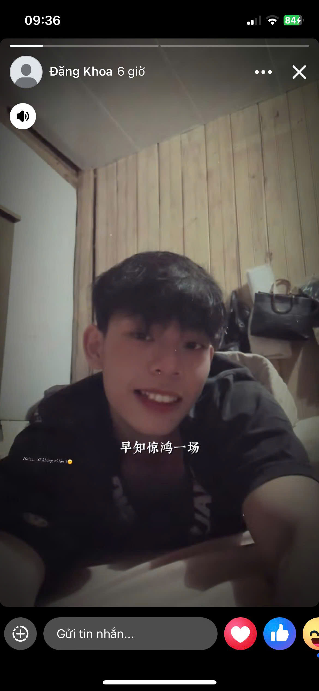
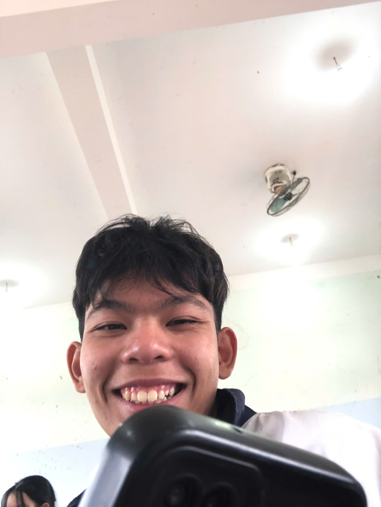
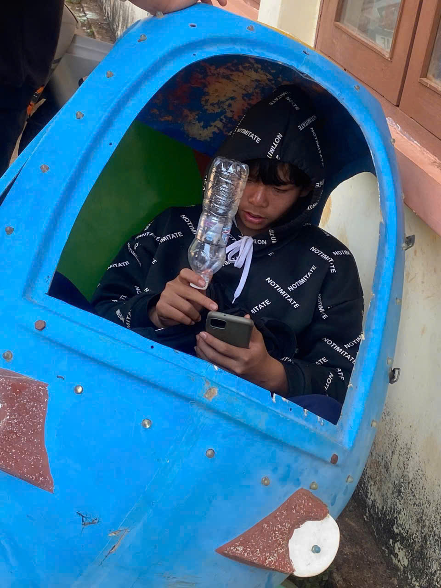

Người con của mảnh đất Bình Định, nhưng anh ấy lại học ở Đăk Nông
Phạm Cao Đăng Khoa, còn được bạn bè gọi vui là "Khoa Pug", là một chàng trai đến từ Bình Định. Anh được biết đến là người hiền lành, dễ gần và luôn sống chân thành với mọi người xung quanh.



Khoa là người vui vẻ, hòa đồng và có phần tự tin trong cách thể hiện bản thân. Anh thường tạo không khí thoải mái khi ở cùng bạn bè và luôn muốn gây ấn tượng theo cách riêng của mình.Tuy nhiên tính cách của anh ta lại rất kỳ cục, anh ta luôn nghĩ anh ta là số một và luôn tỏ ra ngầu. Anh ta luôn tìm những cô gái xinh đẹp để tán tỉnh, mặc dù những cô gái đó không hề thích anh ta một xíu nào nhưng anh ta luôn tự ảo tưởng bản thân và cho rằng cô gái đó là của chính bản thân anh ấy và không cho mọi người xung quanh tiếp cận.
Khoa có một người anh em thân thiết tên là Tạo. Cả hai luôn gắn bó, vui vẻ và chia sẻ nhiều kỷ niệm cùng nhau. Hai người rất yêu thương nhau đến nỗi Khoa còn chia cả người người yêu của mình cho Tạo
Nhìn chung, Khoa là một người trẻ năng động, sống tình cảm và luôn mang lại tiếng cười cho những người xung quanh. Nhưng đôi lúc anh ta hay bị chập chập và ảo tưởng sức mạnh